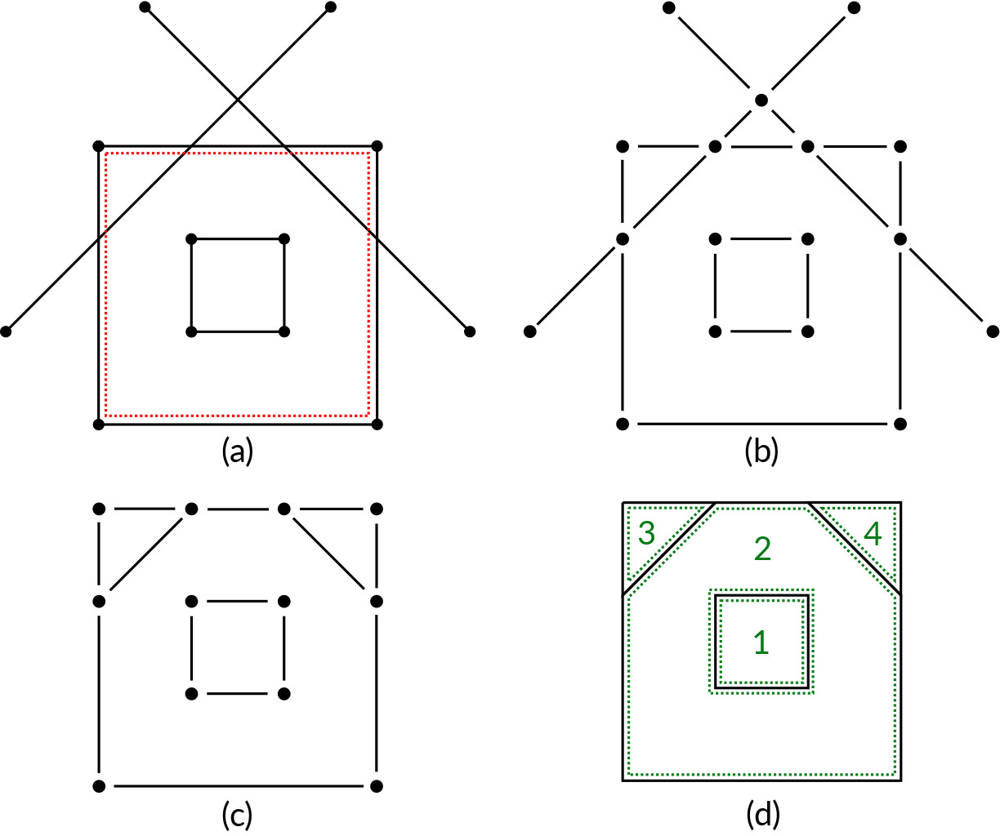

Arrangement of cellular complexes
The arrangement is an algorithm which gets two general $d$-dimensional cellular complexes and arranges them in a singular $d$-dimensional cellular complex of which the cells respect the conditions:
- $\sigma_1 \cap \sigma_2 = \emptyset,\quad \forall$ couple of cells $(\sigma_1, \sigma_2)$
- $\bigcup_i\sigma_i = \mathbb{E}^d$
This operation can be seen as a boolean union of two cellular complexes. Here an exploded visualization of the final result of the arrangement algorithm ran on 2 cubes made by $10\times10\times10$ smaller cubes.

Figure 1: Arrangement of $2000=2\times10\times10\times10$ cubes
API
Every function strictly relative to the arrangement has been collected in the Lar.Arrangement sub-module but the two main functions are accessible directly from the LinearAlgebraicRepresentation namespace.
Lar.Arrangement is the only place in LinearAlgebraicRepresentation where Point matrices store points per row and not per column as described in the documentation of Lar.Points
LinearAlgebraicRepresentation.spatial_arrangement — Functionspatial_arrangement(V::Points, copEV::ChainOp, copFE::ChainOp; [multiproc::Bool])Compute the arrangement on the given cellular complex 2-skeleton in 3D.
A cellular complex is arranged when the intersection of every possible pair of cell of the complex is empty and the union of all the cells is the whole Euclidean space. The function returns the full arranged complex as a list of vertices V and a chain of borders EV, FE, CF.
Additional arguments:
multiproc::Bool: Runs the computation in parallel mode. Defaults tofalse.
LinearAlgebraicRepresentation.planar_arrangement — Functionplanar_arrangement(V::Points, EV::ChainOp, [sigma::Chain], [return_edge_map::Bool], [multiproc::Bool])Compute the arrangement on the given cellular complex 1-skeleton in 2D.
A cellular complex is arranged when the intersection of every possible pair of cell of the complex is empty and the union of all the cells is the whole Euclidean space. The basic method of the function without the sigma, return_edge_map and multiproc arguments returns the full arranged complex V, EV and FE.
Additional arguments:
sigma::Chain: if specified,planar_arrangementwill delete from the output every edge and face outside this cell. Defaults to an empty cell.return_edge_map::Bool: makes the function return also anedge_mapwhich maps the edges of the imput to the one of the output. Defaults tofalse.multiproc::Bool: Runs the computation in parallel mode. Defaults tofalse.
Even if the arrangement algorithm is theoretically dimension independent, we implemented "only" the $d=2$ and $d=3$ version of it.
Theoretical basis
The algorithm is based on the concept of recursive problem simplification (a sort of divide et impera philosophy); if we have a $d$-complex, for every ($d-1$)-cell embedded into the $\mathbb{E}^d$ euclidean space, we bring the cell, and every other cell that could intersect it, down into $\mathbb{E}^{d-1}$. We do this until we reach the $d=1$ in $\mathbb{E}^1$ case; in here, we fragment all the $1$-cells. Then, we travel back to the original $d$-dimension, and, for each dimensional step, we build correct complexes from cells provided by the fragmentation of the lower dimension.

Figure 2: Algorithm overview
We have in input two cellular complexes [fig. 2, a], given as 2-skeletons, which are the sets of 2-cells [fig. 2, b, exploded]. Once we merged the skeletons, we individuate for each $2$-cell (that we will call $\sigma$) all the other cells that could intersect it. We do this by computing the spatial index: it is a mapping $\mathcal{I}(\sigma)$ from a cell $\sigma$ to every other cell $\tau$ of which $box(\sigma) \cap box(\tau) \neq \emptyset$, where the $box$ function provides the axis aligned bounding box (AABB) of a cell [fig. 2, c, $\sigma$ in red and $\mathcal{I}(\sigma)$ in blue]. The spatial arrangement calculation is speeded up by storing the AABBs as dimensional wise intervals into an interval tree \cite{intervaltrees}. Now for each cell $\sigma$ we transform $\sigma \cup \mathcal{I}(\sigma)$ in a way that $\sigma$ lays on the ``x3=0$plane [fig. 2, d] and we find the intersections of the$\mathcal{I}(\sigma)$cells with$x_3=0$plane. So we have a "soup" of 1-cells in$\mathbb{E}^2$[fig. 2, e], and we fragment each 1-cell with every other cell obtaining a valid 1-skeleton [fig. 2, f]. From this data it is possible to build the 2-cells using the ALGORITHM 1 presented and explored by Paoluzzi et al. \cite{Paoluzzi} [fig. 2, g, exploded]. The procedure to fragment 1-cells on a plane and return a 2-complex is called *planar arrangement*. When the planar arrangement is complete, fragmented$\sigma$can be transformed back to its original position in$\mathbb{E}^3``. With every 2-cell correctly fragmented, we can use the already cited ALGORITHM 1 again to build a full 3-complex [fig. 2, h, exploded]. This is possible because ALGORITHM 1 is (almost) dimension independent.
The "$1$-cells in $\mathbb{E}^2$" base case

Figure 3: Planar arrangement overview
This is our base case. We have called planar arrangement the procedure to handle this case since it literally arranges a bunch of edges laying on a plane. So, in input there are 1-cells in $\mathbb{E}^2$ and, optionally (but very likely), the boundary of the original 2-cell $\sigma$ [fig. 3, a, $\sigma$ in red]. We consider each edge and we fragment it with every other edge. This brings to the creation of several coincident vertices: these will be eliminated using a KD-Tree [fig. 3, b, exploded]. At this point we have a perfectly fragmented 1-complex but many edges are superfluous and must be eliminated; two kind of edges are to discard: the ones outside the area of $\sigma$ and the ones which are not part of a maximal biconnected component (We can talk about biconnected components because we can consider the 1-skeleton as a graph: 0-cells are nodes, 1-cells are edges and the boundary operator is a incidence matrix.). The result of this edge pruning outputs a 1-skeleton [fig. 3, c, exploded].
After this, 2-cells must be computed: For each connected component we build a containment tree, which indicates which component is spatially inside an other component. Computing these relations lets us launch the ALGORITHM 1 \cite{Paoluzzi} on each component and then combine the results to create 2-cells with non-intersecting shells [fig. 3, d, 2-cells numbered in green; please note that cell 2 has cell 1 as an hole].
A 2-cell with a non-intersecting shell can be trivially defined as a "face with holes"; the correct definition is that it cannot be shrunk to the dimension of a point.